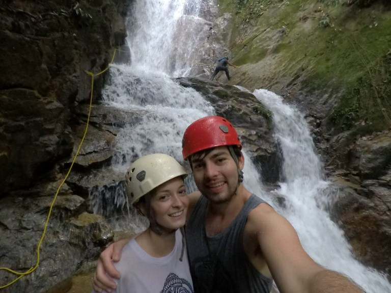

Per niente convinta di trascorrere qualche giorno a Ipoh, mi sono poi dovuta ricredere! Capitale dello stato di Perak, in Malesia, ospita più di mezzo milione di abitanti (all’inizio pensavamo fosse una piccola cittadina sperduta!); sebbene non offra niente di particolare (paesaggi, cibo, etc.) è situata vicino alla città di Gopeng, conosciuta per le svariate attività “estreme” proposte. Ci eravamo prefissati di fare “waterfall abseiling”, ovvero di calarci con la corda da una cascata, e così abbiamo fatto!
Andiamo però in ordine, partendo dalla prima giornata: arrivati tramite Grab nel nostro hotel mi accorgo di non avere con me il telefono… PANICO… mezza addormentata dopo il viaggio di primo mattino devo averlo dimenticato sul taxi. L’abbiamo subito localizzato sul telefono di Carlo tramite l’app “trova Iphone”: era in movimento, si spostava verso nord. Dopo centinaia di squilli, telefonate a vuoto e messaggi all’agenzia Grab, abbiamo iniziato a preoccuparci che la batteria del telefono si scaricasse; inoltre la localizzazione si era fermata per qualche ora in una zona che dalla cartina sembrava fosse foresta ma in realtà era un grande quartiere residenziale alla periferia della città. Così abbiamo deciso di provare ad andare incontro alla vaga (mooolto vaga) posizione dataci da “trova iphone” chiamando un altro Grab per raggiungere la zona e provare a cercare l´auto, che dai nostri ricordi era di colore blu elettrico con un “88” all’interno della targa. Da quanto tempo siamo in viaggio? Quasi due mesi? Ebbene sì, in due mesi per la prima volta ha iniziato a piovere, giusto per aggiungere un po´di pepe alla già disperata ricerca.
Inizialmente il nuovo tassista Grab si è spaventato perché alla domanda “dove volete andare” gli abbiamo risposto “le dobbiamo fare una richiesta un po´particolare..”. Appurato che non avevamo intenzioni losche, ci ha gentilmente scorrazzato per chilometri e chilometri. “Con quel colore di auto, sicuramente la troviamo!!” furono le mie ultime parole prima di entrare nella fatidica zona in cui, naturalmente, risiedevano quasi solo persone con auto blu-elettrico. Traaac. Siamo scesi dall’auto qualche volta per chiedere informazioni ad alcune persone del posto ma a quanto pare i “visi pallidi” non erano benvenuti perché se la davano tutti a gambe vedendoci. Fortunatamente, proprio quando ci stavamo per arrendere e fare retro-front, abbiamo scovato l´auto parcheggiata con il tassista che stava uscendo di casa (“come fate a sapere dove abito?” fu la sua prima reazione–> è proprio un quartiere di gente diffidente) trovando quindi il telefono sul sedile posteriore. E smise di piovere. E tutti vissero felici e contenti. Come avremmo fatto senza internet? Senza Trip Advisor, Booking, Grab, Agoda, Air Asia & co.? Ho pensato molte volte a mia nonna, che ha trascorso una vita a viaggiare ma senza queste comodissime facilitazioni.
Il giorno seguente abbiamo acquistato il pacchetto avventura “waterfall abseiling and sunset hiking”. Arrivati a Gopeng, una simpatica guida ci ha intrattenuto per tutto il pomeriggio. Lui e il suo team ci hanno scortato su un camioncino (quante foglie di palma in testa ci siamo beccati!) fino ad inoltrarci nella selva oscura (sì, oscura… ho visto un ragno che neanche Aragog in Harry Potter lo superava in grandezza) fino ad arrivare ai piedi della cascata.
Mentre le guide organizzavano le attrezzature per la discesa, abbiamo scorto una bellissima e rarissima farfalla verde che si trova solo in questa località della Malesia. Purtroppo non siamo riusciti a fotografarla ma ci siamo emozionati vedendola! Per discendere la cascata avremmo prima dovuto raggiungere la cima attraversando un sentiero infestato da creature malvagie–> dopo il precedente avvistamento del super ragno mi sono inizialmente rifiutata di inoltrarmi maggiormente nella foresta, ma Carlo è riuscito a placare la mia valle di lacrime e convincermi ad andare. Per fortuna, perchè è stato davvero bello! Carlo è sceso addirittura con la gopro in una mano, io invece nella prima discesa mi sono aggrappata alla corda come un Koala si attacca ad un albero. Ogni tanto le scarpe si incastravano nella roccia e la potenza del flusso d’acqua era difficile da contrastare. Quanta adrenalina che avevamo in corpo! È stata un’esperienza entusiasmante; simile al bungee jumping per certi versi: sospesi “nel nulla” facendo affidamento solo alla resistenza della corda.
Il viaggio di ritorno verso il campo base è stato accompagnato da pioggia+freddo che ci ha inzuppati, trovandoci sul retro del furgoncino all’aperto… sembrerà forse una sciocchezza ma ho provato una sensazione di libertà incredibile: ho buttato via le lenti a contatto giornaliere (a casa porto quelle mensili, non avrei potuto buttarle) e mi sono goduta le gocce di pioggia sul viso (a casa solitamente mi trucco il viso)… era da un po´ di tempo che non lo facevo.
Asciugati e cambiati, abbiamo fatto un pit-stop in un “ristorante” della zona: quattro assi di legno e alcune persone del posto che si fermavano a mangiare una zuppa. Era già la nostra seconda sosta in quel posto. Prima di andare alla cascata, la nostra guida ci ha rivelato che consuma almeno 6 pasti al giorno per tenersi in forma ed è rimasto allibito quando io ho rifiutato il cibo avendo pranzato “già” un’ora prima. Erano ormai le 16 e il tizio insisteva (di nuovo) perché comandassi un piatto di noodle; a dire il vero un po’ di fame mi era anche venuta, però ho preferito non rischiare di passare la notte sul gabinetto (penso che quel posto fosse il peggiore mai visto fin’ora). Così, imbarazzata, ho ordinato almeno una tazza di thè caldo (se è bollita l’acqua non dovrebbe farmi stare male, ho pensato), il quale si è rivelato essere tutto al di fuori di thè caldo. Mi viene da ridere a ripensarci. Penso che sia una loro specialità: è freddo, ci aggiungono 3kg di zucchero, forse anche latte e non so (non voglio nemmeno sapere) cos’altro. Il tizio mi fissava perché non bevevo nemmeno quello, allora quando si è alzato ed allontanato per un attimo ho fatto quello che faccio sempre: smollo la patata bollente a Carlo ahah. Un po’ne ha bevuto ma, avendolo ordinato anche lui, non ne poteva più. Così metà bicchiere l’ho versato per terra con gli occhi di una famiglia malese puntati addosso per l’indignazione.
Il tizio-guida ci chiede poi se vogliamo fare anche la seconda parte dell’attività, ovvero fare trekking nella foresta fino ad arrivare in cima ad una montagna e guardare il tramonto. Diluviando ancora, decidiamo di non farlo più–> per fortuna, perché solo in seguito ci dice (ridendo) che se fossimo andati ci avrebbero assalito le sanguisughe “succede sempre durante/dopo la pioggia in queste foreste… in ogni parte del corpo ti si attaccano e non è piacevole, ti succhiano il sangue e poi per staccarle bisogna avvicinare una sigaretta accesa in modo che il calore le faccia cadere… è successo proprio l´altro giorno con una coppia di turisti”. LI MORTACCI TUA.
In ogni caso Ipoh e Gopeng sono state una piacevole sorpresa. Siamo anche andati al cinema a vedere il terzo film della saga Maze Runner e in un ristorante hanno pure messo una canzone di Jesse McCartney. Meglio di così!
Comment Section